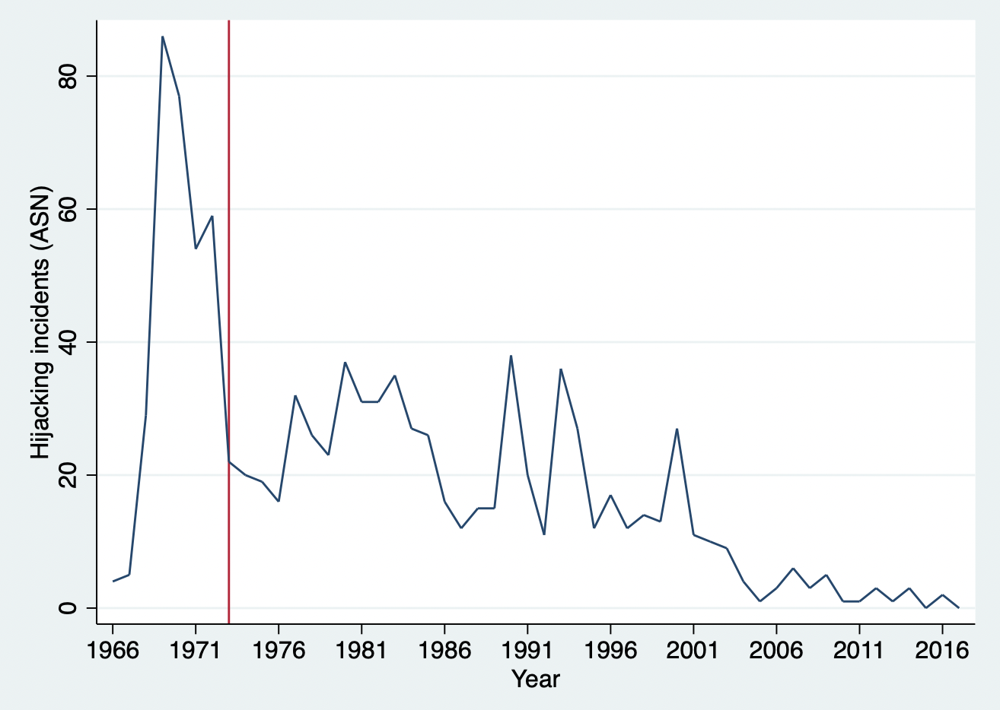
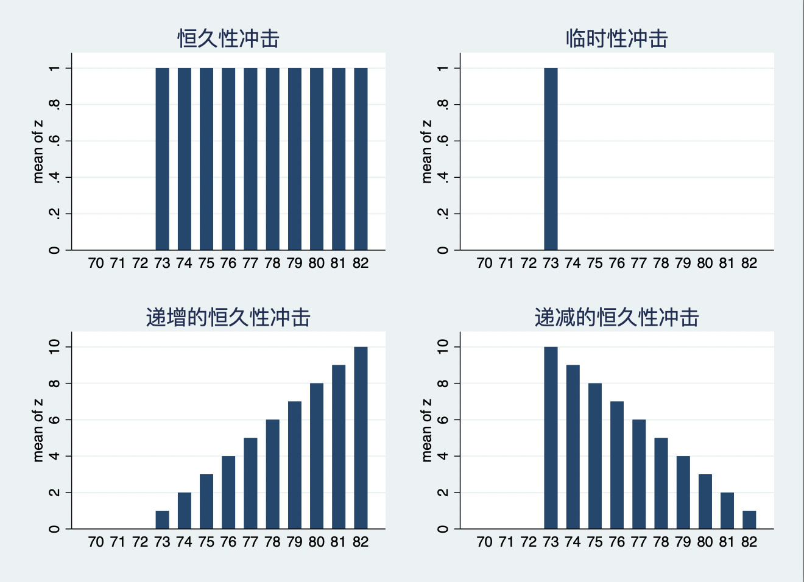
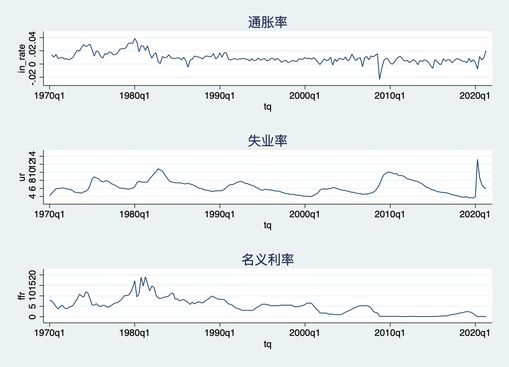
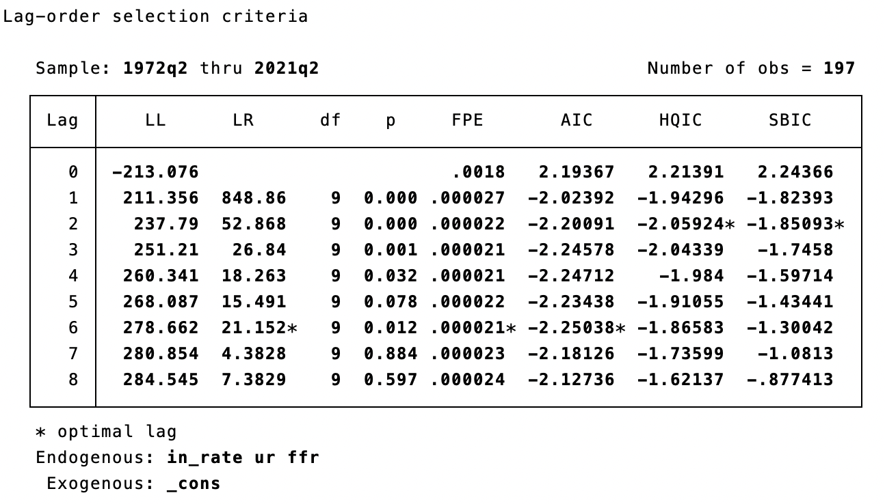
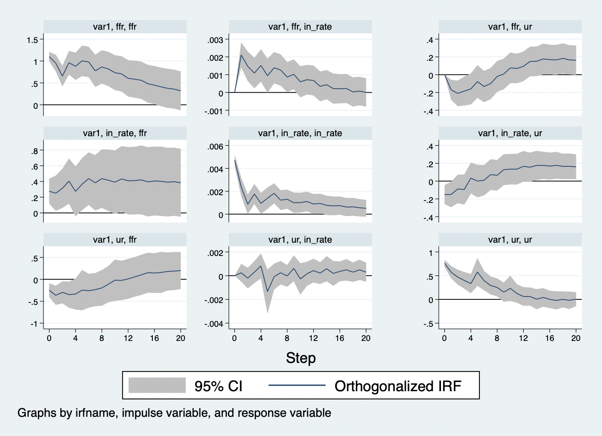

时间序列的自回归模型
自回归模型
当我们在进行事件研究时，我们实际上有事件发生后的数据，但我们还需要预测出如果没有发生该事件，这段时期的反事实数据，然后将实际数据与反事实数据进行比较。这里有一个前提假设：如果没有事件发生，事件发生前的变化趋势会持续。也就是说，我们可以利用事件前的时间序列来预测事件后的变化。本讲稿前面的内容在估计处理效应是，都是利用截面数据或者面板数据来预测反事实对照组，那么，我们如何利用时间序列数据来预测反事实变化趋势呢？
技术上来说，google股票收益率的例子也是时间序列预测的一种形式，它用估计期的收益率来预测事件窗口期的平均收益率，进而用事件窗口期的实际收益率与预测的反事实收益率进行比较，得到异常收益率AR，最终得到更名事件对谷歌股票收益率的效应。但实际上的时间序列预测方法需要更加关注数据的时间维度——观测值的时间相关性。例如，如果在t期发生了一个事件，导致了处理发生作用，那么，这个处理不仅仅在t期产生作用，可能还会随着时间推移持续发生作用。这会给统计估计和预测带来许多挑战，传统的计量方法可能不适用了，我们需要借助于专门的时间序列估计和预测方法。
下面，我们从一个时间序列的例子来介绍时间序列方法。今年是美国911飞机劫持事件20周年。飞机劫持事件会造成非常严重的后果，例如，财产损失，人命关天等等。实际上，飞机劫持事件非常多，从Our World in Data上的统计可以看出，在飞机出现的时候，就伴随着飞机劫持等恐怖事件出现了。为了应对飞机劫持事件，美国在1973年引入了金属探测器，随后全球开始采用这一措施来降低飞机劫持事件。我们从Our World in Data网址下载全球20世纪初-2017年的飞机劫持事件数据，20世纪60年代以来的飞机劫持事件数据如图11.4所示。从图中可以看到，1973年后，飞机劫持事件的确大幅下降了。那么，我们感兴趣的问题就来了：安装金属探测器的安检措施对飞机劫持事件的效应有多大呢？这个时候，我们可以会用上述股票收益率的办法来估计安检措施的效应。
用\(\{y_t\}\)表示全球飞机劫持事件的数量。首先，我们计算得到1973年以前的飞机劫持事件数的均值；然后，计算1973年后的飞机劫持事件的均值；再然后，假设没有安装金属探测器时，1973年的飞机劫持事件数量会遵循1973年前的趋势变化，因此，就可以预测得到反事实下的1973年后飞机劫持事件均值与1973年相同；最后，比较反事实预测值与实际值，得到金属探测器的效应。

但是，这种方法过于简单了。它忽略了时间序列数据\(\{y_t\}\)的序列相关问题。因此，我们可以时间专门的时间序列方法来进行事件研究。例如，Enders, Sandler, and Cauley (1990)利用下列时间序列回归模型研究了金属探测器对飞机劫持事件的效应：
\[\begin{equation} y_t = a_0 +a_1 y_{t-1} +c_0 z_t +\epsilon_t, |a_1|<1 \end{equation}\]
其中，\(z_t\)表示处理变量，例如，安装了金属探测器的年份为1，没有安装的年份为0。
而且，在方程（11.1）中，上一期的\(y_{t-1}\)的值会影响到本期\(y_t\)的值，这被称为自回归。自回归表达的是一个时间序列变量\(y_t\)的条件均值是其自身滞后值的线性函数。例如，我今天在银行存了100块钱，不仅仅增加了我银行账户当前的存款，还增加了明天的存款，且还有额外的利息，只要我不取出来，就会持续的产生利息，增加我的账户金额。这就是自回归。方程（11.1）是一个一阶自回归AR(1)，括号中的1意味着仅仅只有最近一期y的值对于本期的预测值y来说至关重要。即如果我们想要预期某一年的飞机劫持事件数，那么，我们只需要知道上一年的飞机劫持事件数即可。因此，一阶自回归仅仅只使用\(y_t\)的一阶滞后值\(y_{t-1}\)。
下面，我们来看看这个模型的性质。注意，对于1973年前，\(z_t=0\)。因此，\(a_0\)就是曲线的截距项，而此时我们可以求得飞机劫持事件数的长期均值为\(\frac{a_0}{1-a_1}\)。从1973年开始，\(z_t=1\)，此时，截距项变成了\(a_0+c_0\)，因此，金属探测器的初始效应就是应该是\(c_0\)。这个效应的统计显著性也可以利用传统的t统计量来进行检验。例如，我们利用样本数据来跑回归：
*加载数据
use "/Users/xuwenli/OneDrive/DSGE建模及软件编程/教学大纲与讲稿/应用计量经济学讲稿/应用计量经济学讲稿与code/data/hijacking.dta",repalce
* 创建虚拟变量
gen z =0 if year>=1966
replace z=1 if year>=1973
* ols回归
reg hji L.hji z,r
上述回归结果显示，\(\hat{c}_0=-16.6\)，而且在10%的水平下显著。也就是说，安装金属探测器在初始期会降低飞机劫持事件数16.6起。
到这里结束了吗？我们想想，当1973年安装金属探测器后，1973年的飞机劫持事件数会下降，而根据自回归模型的性质，1973年的飞机劫持事件数又会影响到1974年的飞机劫持事件数，1974年的飞机劫持事件数又会影响到1975年的飞机劫持事件数，依次递推，1973年后的每一年都会受到影响，这种长期效应应该是新的长期均值\(\frac{a_0+c_0}{1-a_1}\)减去没有金属探测器时的长期均值\(\frac{a_0}{1-a_1}\)，即安装金属探测器的长期效应为\(\frac{c_0}{1-a_1}\)。可能我们更感兴趣地是安装金属探测器对每一年的暂时效应为多大，这个时候我们可以借助于脉冲响应函数（IRF, impulse response function）。下面我们用简单的数学公式来看看什么是脉冲响应。我们迭代方程（11.1），得到
\[\begin{align*} y_t & = a_0 +a_1 y_{t-1} +c_0 z_t +\epsilon_t \\ & = a_0 +a_1 (a_0 +a_1 y_{t-2} +c_0 z_{t-1} +\epsilon_{t-1}) +c_0 z_t +\epsilon_t \\ & = a_0(1 +a_1) + a_1^2 y_{t-2} +c_0 (z_t+a_1 z_{t-1})+(\epsilon_t+a_1 \epsilon_{t-1})\\ & = ... \\ & = \frac{a_0}{1-a_1} +c_0 \sum_{i=0}^{\infty}a_1^i z_{t-i} +\sum_{i=0}^{\infty}a_1^i \epsilon_{t-i}\\ \end{align*}\]
上述方程就是脉冲响应函数。利用这个函数，我们可以得到\(y_t\)对一个事件/处理变量\(z_t\)的外生变动/冲击(在信号学中称为“脉冲”)的响应序列。例如，为了追踪金属探测器对劫机事件的效应，假设t=1973，t+1=1974等等。对于t期，\(z_t\)对于\(y_t\)的影响就是\(c_0\)。据此，我们对\(y_{t+1}\)求关于\(z_t\)的偏导数：
\[\frac{\partial y_{t+1}}{\partial z_t} = c_0+c_0a_1\]
\(c_0\)项表示\(z_{t+1}\)对\(y_{t+1}\)的直接效应，而\(c_0a_1\)项则反应了\(z_t\)对\(y_t\)的效应(=\(c_0\))乘以\(y_t\)对\(y_{t+1}\)的效应(=\(a_1\))。按照这种方式，我们可以追踪到整个脉冲响应函数：
\[\frac{\partial y_{t+j}}{\partial z_t} = c_0(1+a_1+...+a_1^j)\]
随着时间的推移，即j趋向于无穷，我们可以得到长期效应就是\(\frac{c_0}{1-a_1}\)。如果假设\(0<a_1<1\)，随着时间的推移，结果变量对干预/处理/政策的响应程度越来越大。如果\(-1<a_1<0\)，政策对于\(y_t\)的效应就会震荡衰退。在初始效应为\(c_0\)后，\(y_t\)序列的响应会震荡衰退，趋向于长期效应水平\(\frac{c_0}{1-a_1}\)。
需要特别注意的是，现实世界中的政策干预/冲击不仅仅只有图11.5左上角那种“恒久性冲击”——1973年安装了金属探测器，以后每一年都有，或者1973年后政策干预变量从0变为1。除此之外，还有三种冲击类型：（1）如图11.5右上角的“临时性冲击”，政策变量只在1973年从0变为1，其它年份仍然为0，此时，由于自回归的性质，临时性冲击的效应也可能持续很多期；（2）如图11.5下方的“逐渐变化的冲击”，也可能逐渐递增，也可能逐渐递减。

用时间序列数据来进行预测需要满足平稳性假设，如果平稳性假设不满足，那么，传统的假设检验、置信区间和预测就不可靠了。时间序列数据中经常出现两种类型的非平稳性：趋势和断点。
这些问题也需要增加阐述！
向量自回归模型
这一节的内容主要来自于Stata Blog关于Stata中的VAR和结构VAR描述。
VAR
在上文的单变量自回归中，时间序列\(y_t\)可以建模成自身滞后值的函数。如果我们想要分析多个时间序列变量时，一个自然的扩展就是向量自回归（VAR，vector autoregression），顾名思义，就是将多变量的向量建模成自身滞后值和向量中其它变量滞后值的函数。例如一个两变量一阶VAR模型为：
\[\begin{align*} & y_t =a_0 +a_1 y_{t-1} +a_2 x_{t-1} +\epsilon_{1,t} \\ & x_t =b_0 +b_1 x_{t-1} +b_2 y_{t-1}+\epsilon_{2,t}\\ \end{align*}\]
应用宏观经济学家用这类模型来描述宏观经济数据，也用它们来执行因果推断和政策分析。下面，我们利用VAR模型来分析一些有趣的宏观经济与政策问题。
在利用向量自回归模型之前，我们肯定要收集数据，也就是在VAR模型中包含哪些宏观经济变量。变量选择要依据我们研究的问题和相关的理论来给出指导。此外，我们还要选择滞后期。此时，我们可以尝试一期一期滞后的加进VAR模型中，或者使用stata中提供的一些正式的滞后期选择标准来进行决策。下面，我们用美国1970年一季度-2021年一季度的宏观经济变量——失业率（ur）、通胀率（inflation）和名义利率（ffr）——来说明VAR的应用。我们可以将这个三变量的VAR模型写成：
\[\begin{equation} \left[ \begin{array}{c} inflation_t \\ ur_t \\ ffr_t \end{array} \right] =A_0 +A_1 \left[ \begin{array}{c} inflation_{t-1} \\ ur_{t-1} \\ ffr_{t-1} \end{array} \right] + \cdots+A_k \left[ \begin{array}{c} inflation_{t-k} \\ ur_{t-k} \\ ffr_{t-k} \end{array} \right] + \left[ \begin{array}{c} \epsilon_{1,t} \\ \epsilon_{2,t} \\ \epsilon_{3,t} \end{array} \right] \end{equation}\]
其中，\(A_0\)是截距项的向量，\(A_1,\cdots, A_k\)是\(3 \times 3\)系数矩阵。我们先来看看三个宏观经济变量的变化，如图11.6所示。从图中，我们可以看出：（1）20世纪70年代出现的“滞胀现象”——高通胀与高失业同时并存；（2）2007年美国次贷危机引发的全球金融危机使得美国发生通缩情况，而失业率也高企，此时，美联储开始大幅降息至零利率水平左右；（3）2020年的全球新冠危机又使得美国失业率急剧攀升，通胀率也短期内进入通缩，为了应对新冠疫情，美联储再次大幅降息至零利率水平附近，失业率开始下降，但通胀率又开始抬头。那么，利率政策的变化对宏观经济会产生什么效应呢？

下面，我们用VAR模型来估计一下货币政策的宏观经济效应。如上文所示，我们首先需要选择VAR模型的最后滞后期。我们可以使用stata中的varsoc命令来执行一些正式的滞后期选择标准。
* 选择最优滞后期
varsoc in_rate ur ffr,maxlag(8)

varsoc命令的结果如图11.7所示，显示了许多滞后期选择检验。这些检验的含义可以\(help~ varsoc\)查看。上图中的极大似然比率(LR)和AIC检验都推荐滞后6期，因此，下面我们也选择滞后6期来运行向量自回归。
